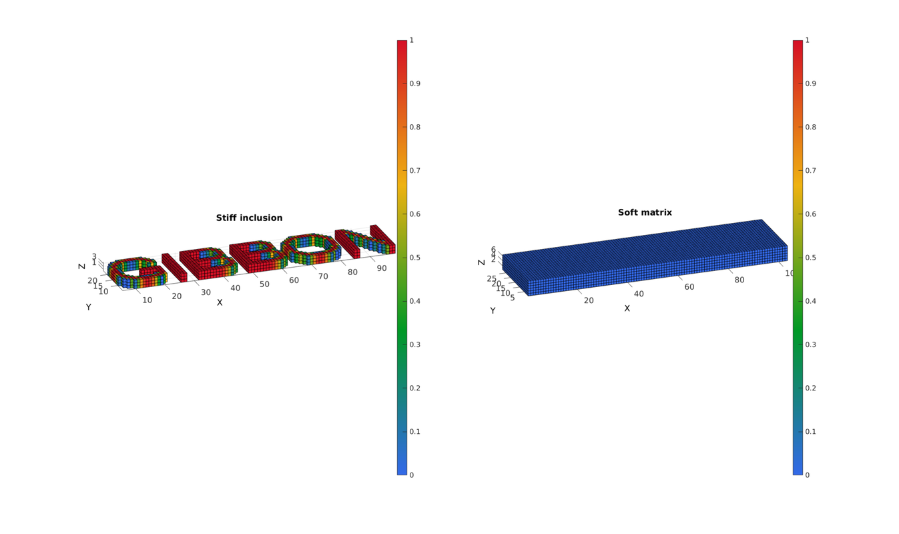
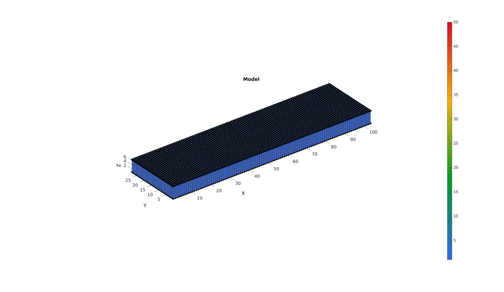
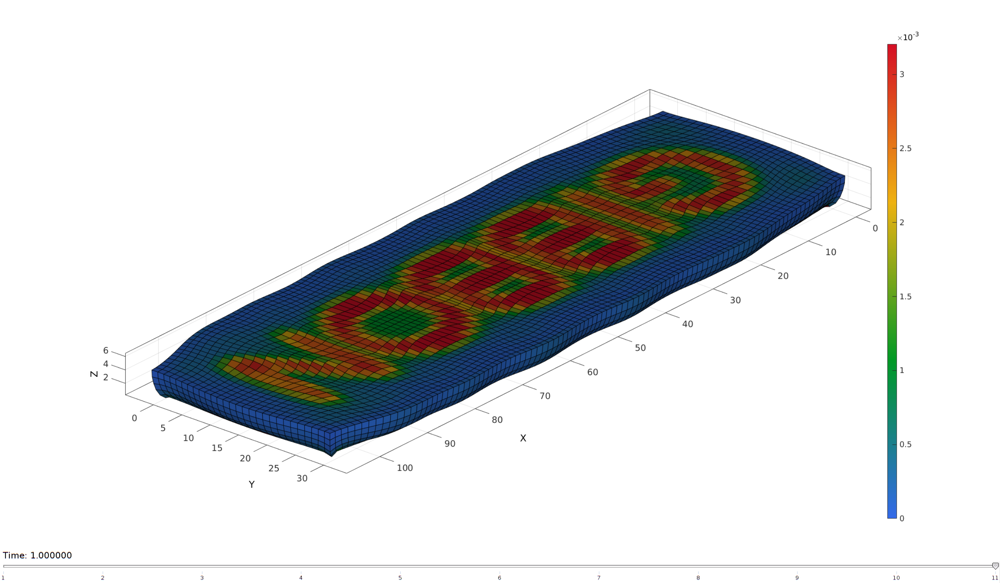

DEMO_layered_spatvar
This demonstration shows how to generate a model with spatially varying material parameters.
Contents
clear; close all; clc;
Plot settings
fontSize=15; faceAlpha1=1; faceAlpha2=0.5; edgeColor=0.25*ones(1,3); edgeWidth=1.5; markerSize1=25; cMap=gjet(250);
path names
defaultFolder = fileparts(fileparts(mfilename('fullpath'))); savePath=fullfile(defaultFolder,'data','temp'); modelNameEnd='tempModel'; modelName=fullfile(savePath,modelNameEnd);
DEFINING AND VISUALIZING THE PARAMETER MAP
numElemIncLayer=3; numElemTopLayer=3; numElemLayers=numElemTopLayer+numElemIncLayer; [G]=textImage('GIBBON','Arial',25,5); G=flipud(G); G=G-min(G(:)); G=G./max(G(:)); S=zeros(size(G,1),size(G,2),numElemLayers); S(:,:,1:numElemIncLayer)=repmat(G,[1 1 numElemIncLayer]);
Control parameters
P=2*1e-3; nBins=50; minC=1e-3; %minimum value maxC=minC*100; %Maximum value c1_range_ini=linspace(minC,maxC,nBins); %Value range k_factor=50; m1=2; % FEA control settings numTimeSteps=10; %Number of time steps desired max_refs=25; %Max reforms max_ups=10; %Set to zero to use full-Newton iterations opt_iter=10; %Optimum number of iterations max_retries=5; %Maximum number of retires dtmin=(1/numTimeSteps)/100; %Minimum time step size dtmax=1/numTimeSteps; %Maximum time step size
VISUALIZING THE MAPPING
[F,V,C]=ind2patch(true(size(S)),S,'vb'); [C_rgb]=gray2RGBColorMap(C,jet(250),[min(S(:)) max(S(:))]); [Fs1,Vs1,Cs1]=ind2patch(S>0,S,'vb'); [Fs2,Vs2,Cs2]=ind2patch(S==0,S,'vb'); cFigure; subplot(1,2,1); title('Stiff inclusion','FontSize',fontSize); xlabel('X','FontSize',fontSize);ylabel('Y','FontSize',fontSize); zlabel('Z','FontSize',fontSize); hold on; patch('Faces',Fs1,'Vertices',Vs1,'FaceColor','flat','CData',Cs1,'EdgeColor','k','FaceAlpha',1); axis equal; view(3); axis tight; axis vis3d; grid on; view([-20,22]); colormap(cMap); caxis([min(S(:)) max(S(:))]); colorbar; set(gca,'FontSize',fontSize); subplot(1,2,2); title('Soft matrix','FontSize',fontSize); xlabel('X','FontSize',fontSize);ylabel('Y','FontSize',fontSize); zlabel('Z','FontSize',fontSize); hold on; patch('Faces',Fs2,'Vertices',Vs2,'FaceColor','flat','CData',Cs2,'EdgeColor','k','FaceAlpha',1); axis equal; view(3); axis tight; axis vis3d; grid on; view([-20,22]); colormap(cMap); caxis([min(S(:)) max(S(:))]); colorbar; set(gca,'FontSize',fontSize); drawnow;
BUILD MODEL
%Create hexahedral elements with function based colors [E,V,C]=ind2patch(true(size(S)),S,'hu'); %Define element parameter mapping elementMaterialIndices=C; elementMaterialIndices=elementMaterialIndices-min(elementMaterialIndices(:)); elementMaterialIndices=elementMaterialIndices./max(elementMaterialIndices(:)); %Normalized elementMaterialIndices=round(elementMaterialIndices.*(nBins-1))+1; %1-nPar indUni=unique(elementMaterialIndices(:)); %Unique indices of used materials c1_range=c1_range_ini(indUni); %Select relevant points nPar=numel(c1_range); %Fix indices indFix1=1:numel(indUni); indFix2=zeros(nBins,1); indFix2(indUni)=indFix1; elementMaterialIndices=indFix2(elementMaterialIndices); %Reorder elementMaterialIndices and element matrix [elementMaterialIndices,indSort]=sort(elementMaterialIndices); E=E(indSort,:); [F,PF]=element2patch(E,elementMaterialIndices); %Get boundary faces for light plotting [indBoundary]=tesBoundary(F,V); Fb=F(indBoundary,:); logicTopNodes=abs(V(:,3)-max(V(:,3)))<=max(eps(V(:,3))); logicTopFaces=all(logicTopNodes(Fb),2); F_top=Fb(logicTopFaces,:); logicBottomNodes=abs(V(:,3)-min(V(:,3)))<=max(eps(V(:,3))); cFigure; title('Model','FontSize',fontSize); xlabel('X','FontSize',fontSize);ylabel('Y','FontSize',fontSize); zlabel('Z','FontSize',fontSize); hold on; patch('Faces',F,'Vertices',V,'FaceColor','flat','CData',PF,'edgeColor',edgeColor,'lineWidth',edgeWidth,'FaceAlpha',1); patch('Faces',F_top,'Vertices',V,'FaceColor',0.5*ones(1,3),'edgeColor','k','lineWidth',edgeWidth,'FaceAlpha',0.5); patchNormPlot(F_top,V); plotV(V(logicTopNodes,:),'k.','MarkerSize',markerSize1); plotV(V(logicBottomNodes,:),'k.','MarkerSize',markerSize1); colormap(cMap); caxis([min(elementMaterialIndices(:)) max(elementMaterialIndices(:))]); colorbar; axis equal; view(3); axis tight; axis vis3d; grid on; set(gca,'FontSize',fontSize);
SET UP BOUNDARY CONDITIONS
%List of nodes to fix bcFixList=find(logicBottomNodes); %List of nodes to prescribe displacement for bcPrescribeList=find(logicTopNodes); %Define displacement magnitudes displacementMagnitude=[0 0 -0.3.*numElemLayers];
CONSTRUCTING FEB MODEL
FEB_struct.febio_spec.version='2.0'; FEB_struct.Module.Type='solid'; % Defining file names FEB_struct.run_filename=[modelName,'.feb']; %FEB file name FEB_struct.run_logname=[modelName,'.txt']; %FEBio log file name %Creating FEB_struct FEB_struct.Geometry.Nodes=V; FEB_struct.Geometry.Elements={E}; %The element sets FEB_struct.Geometry.ElementType={'hex8'}; %The element types FEB_struct.Geometry.ElementMat={elementMaterialIndices}; FEB_struct.Geometry.ElementsPartName={'Block'}; % DEFINING SPATIALLY VARYING MATERIAL SET for q=1:1:nPar %Defining material parameters c1=c1_range(q); k=c1*k_factor; FEB_struct.Materials{q}.Type='Ogden'; FEB_struct.Materials{q}.Name=['cube_mat_',num2str(q)]; FEB_struct.Materials{q}.Properties={'c1','c2','m1','m2','k'}; FEB_struct.Materials{q}.Values={c1,c1,m1,-m1,k}; end %Control section FEB_struct.Control.AnalysisType='static'; FEB_struct.Control.Properties={'time_steps','step_size',... 'max_refs','max_ups',... 'dtol','etol','rtol','lstol'}; FEB_struct.Control.Values={numTimeSteps,1/numTimeSteps,... max_refs,max_ups,... 0.001,0.01,0,0.9}; FEB_struct.Control.TimeStepperProperties={'dtmin','dtmax','max_retries','opt_iter'}; FEB_struct.Control.TimeStepperValues={dtmin,dtmax,max_retries,opt_iter}; %Defining node sets FEB_struct.Geometry.NodeSet{1}.Set=bcFixList; FEB_struct.Geometry.NodeSet{1}.Name='bcFixList'; FEB_struct.Geometry.NodeSet{2}.Set=bcPrescribeList; FEB_struct.Geometry.NodeSet{2}.Name='bcPrescribeList'; %Defining surfaces FEB_struct.Geometry.Surface{1}.Set=F_top; FEB_struct.Geometry.Surface{1}.Type='tri3'; FEB_struct.Geometry.Surface{1}.Name='Pressure_surface'; %Adding BC information FEB_struct.Boundary.Fix{1}.bc='x'; FEB_struct.Boundary.Fix{1}.SetName=FEB_struct.Geometry.NodeSet{1}.Name; FEB_struct.Boundary.Fix{2}.bc='y'; FEB_struct.Boundary.Fix{2}.SetName=FEB_struct.Geometry.NodeSet{1}.Name; FEB_struct.Boundary.Fix{3}.bc='z'; FEB_struct.Boundary.Fix{3}.SetName=FEB_struct.Geometry.NodeSet{1}.Name; FEB_struct.Boundary.Prescribe{1}.Set=bcPrescribeList; FEB_struct.Boundary.Prescribe{1}.bc='z'; FEB_struct.Boundary.Prescribe{1}.lc=1; FEB_struct.Boundary.Prescribe{1}.nodeScale=displacementMagnitude(ones(numel(bcPrescribeList),1),3); FEB_struct.Boundary.Prescribe{1}.Type='relative'; % %Adding load information % FEB_struct.Loads.Surface_load{1}.Type='pressure'; % FEB_struct.Loads.Surface_load{1}.SetName=FEB_struct.Geometry.Surface{1}.Name; % FEB_struct.Loads.Surface_load{1}.lcPar='pressure'; % FEB_struct.Loads.Surface_load{1}.lcParValue=P; % FEB_struct.Loads.Surface_load{1}.lc=1; %Load curves FEB_struct.LoadData.LoadCurves.id=1; FEB_struct.LoadData.LoadCurves.type={'linear'}; FEB_struct.LoadData.LoadCurves.loadPoints={[0 0;1 1;]}; %Adding output requests FEB_struct.Output.VarTypes={'displacement','stress','relative volume'}; %Specify log file output run_disp_output_name=[modelNameEnd,'_node_out.txt']; run_elem_output_name=[modelNameEnd,'_element_out.txt']; FEB_struct.run_output_names={run_disp_output_name,run_elem_output_name}; FEB_struct.output_types={'node_data','element_data'}; FEB_struct.data_types={'ux;uy;uz','sed'};
SAVING .FEB FILE
FEB_struct.disp_opt=0; %Display waitbars
febStruct2febFile(FEB_struct);
Warning: febStruct2febFile is depricated and will be removed in future releases. Update your codes to use febioStruct2xml, see HELP_febioStruct2xml (furthermore febio_spec version 2.5 is recommended) %%%%%%%%%%%%%%%%%%%%%%%%%%%%%%%%%%%%%%%%%%%%% --- Writing FEBio XML object --- 18-Feb-2018 16:23:03 Using febio_spec: 2.0 Adding Module level Adding Control level Adding Material level Adding Geometry level ----> Adding node field ----> Adding element field ----> Adding hex8 element entries.... ----> Adding surface field ----> Adding NodeSet field Adding Boundary level ----> Defining fix type boundary conditions ----> Defining prescribe type boundary conditions Adding LoadData level ----> Defining load curves Adding Output level ----> Adding plotfile field ----> Adding logfile field Writing .feb file --- Done --- 18-Feb-2018 16:23:05
RUNNING FEBIO JOB
% FEBioRunStruct.FEBioPath='C:\Program Files\febio-2.3.1\bin\febio2.exe'; FEBioRunStruct.run_filename=FEB_struct.run_filename; FEBioRunStruct.run_logname=FEB_struct.run_logname; FEBioRunStruct.disp_on=1; FEBioRunStruct.disp_log_on=1; FEBioRunStruct.runMode='external';%'internal'; FEBioRunStruct.t_check=0.25; %Time for checking log file (dont set too small) FEBioRunStruct.maxtpi=1e99; %Max analysis time FEBioRunStruct.maxLogCheckTime=10; %Max log file checking time [runFlag]=runMonitorFEBio(FEBioRunStruct);%START FEBio NOW!!!!!!!!
%%%%%%%%%%%%%%%%%%%%%%%%%%%%%%%%%%%%%%%%%%%%% --- STARTING FEBIO JOB --- 18-Feb-2018 16:23:05 Waiting for log file... Proceeding to check log file...18-Feb-2018 16:23:06 ------- converged at time : 0.1 ------- converged at time : 0.2 ------- converged at time : 0.3 ------- converged at time : 0.4 ------- converged at time : 0.5 ------- converged at time : 0.6 ------- converged at time : 0.7 ------- converged at time : 0.8 ------- converged at time : 0.9 ------- converged at time : 1 --- Done --- 18-Feb-2018 16:23:27
if runFlag==1 %i.e. a succesful run
IMPORTING NODAL DISPLACEMENT RESULTS
Importing nodal displacements from a log file
[time_mat,N_disp_mat,~]=importFEBio_logfile(fullfile(savePath,FEB_struct.run_output_names{1})); %Nodal displacements
time_mat=[0; time_mat(:)]; %Time
N_disp_mat=N_disp_mat(:,2:end,:);
sizImport=size(N_disp_mat);
sizImport(3)=sizImport(3)+1;
N_disp_mat_n=zeros(sizImport);
N_disp_mat_n(:,:,2:end)=N_disp_mat;
N_disp_mat=N_disp_mat_n;
DN=N_disp_mat(:,:,end);
DN_magnitude=sqrt(sum(DN(:,3).^2,2));
V_def=V+DN;
[CF]=vertexToFaceMeasure(Fb,DN_magnitude);
IMPORTING ELEMENT STRAIN ENERGY
[~, N_sed_mat,~]=importFEBio_logfile(fullfile(savePath,FEB_struct.run_output_names{2})); %Nodal forces
N_sed_mat=N_sed_mat(:,2:end,:);
sizImport=size(N_sed_mat);
sizImport(3)=sizImport(3)+1;
N_sed_mat_n=zeros(sizImport);
N_sed_mat_n(:,:,2:end)=N_sed_mat;
N_sed_mat=N_sed_mat_n;
% E_sed=N_sed_mat(:,:,end);
% DN_magnitude=sqrt(sum(DN(:,3).^2,2));
% V_def=V+DN;
% [CF]=vertexToFaceMeasure(Fb,DN_magnitude);
Axis limits for plotting
minD=min(V+min(N_disp_mat,[],3),[],1);
maxD=max(V+max(N_disp_mat,[],3),[],1);
axisLim=[minD(1) maxD(1) minD(2) maxD(2) minD(3) maxD(3)];
Plotting the deformed model
[F,CF]=element2patch(E,N_sed_mat(:,:,1));
%Get boundary faces for light plotting
[indBoundary]=tesBoundary(F,V);
Fb=F(indBoundary,:);
Cb=CF(indBoundary,:);
hf=cFigure;
xlabel('X','FontSize',fontSize); ylabel('Y','FontSize',fontSize); zlabel('Z','FontSize',fontSize); hold on;
hp=gpatch(Fb,V_def,Cb,'k',1);
% gpatch(Fb,V,0.5*ones(1,3),'none',0.25);
view(3); axis tight; axis equal; grid on; box on;
colormap(gjet(250)); colorbar;
caxis([min(N_sed_mat(:)) max(N_sed_mat(:))/7]);
view(130,25);
camlight headlight;
set(gca,'FontSize',fontSize);
axis(axisLim);
drawnow;
animStruct.Time=time_mat;
for qt=1:1:size(N_disp_mat,3)
DN=N_disp_mat(:,:,qt);
DN_magnitude=sqrt(sum(DN(:,3).^2,2));
V_def=V+DN;
[~,CF]=element2patch(E,N_sed_mat(:,:,qt));
Cb=CF(indBoundary,:);
%Set entries in animation structure
animStruct.Handles{qt}=[hp hp]; %Handles of objects to animate
animStruct.Props{qt}={'Vertices','CData'}; %Properties of objects to animate
animStruct.Set{qt}={V_def,Cb}; %Property values for to set in order to animate
end
anim8(hf,animStruct);
drawnow;
 end

GIBBON www.gibboncode.org
Kevin Mattheus Moerman, gibbon.toolbox@gmail.com
GIBBON footer text
License: https://github.com/gibbonCode/GIBBON/blob/master/LICENSE
GIBBON: The Geometry and Image-based Bioengineering add-On. A toolbox for image segmentation, image-based modeling, meshing, and finite element analysis.
Copyright (C) 2018 Kevin Mattheus Moerman
This program is free software: you can redistribute it and/or modify it under the terms of the GNU General Public License as published by the Free Software Foundation, either version 3 of the License, or (at your option) any later version.
This program is distributed in the hope that it will be useful, but WITHOUT ANY WARRANTY; without even the implied warranty of MERCHANTABILITY or FITNESS FOR A PARTICULAR PURPOSE. See the GNU General Public License for more details.
You should have received a copy of the GNU General Public License along with this program. If not, see http://www.gnu.org/licenses/.